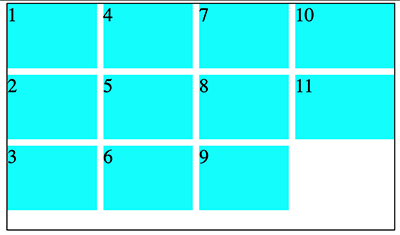

Learning Web Design
Exploring Flexwrap
When exploring the Learning Web Design text book my eye was caught by page 425 and 426 where the flex-wrap property is explored in the row and column directions. Flexbox wrap is a great way to optimize things later for desktop and responsive design.
In class we learned that flexbox is a way to turn things from a vertical format into a horizontal layout. Flexbox is how many card layouts and horizontal lists found on the web are designed. Flex wrap is a unique layout that does not have as rigorous a structure as creating a flex grid but I have not had much practice with it.

So this week I decided to further refine my flex wrap techniques. Did you know that it is possible to wrap text in a column? Notice how the numbers in this image go down and then jump automatically to the next section. That’s the beauty of flex box wrap.
Have a bunch of items that are different sizes but you want them to be organized? Just use flexbox wrap. It's a great way to keep uneven lists and items organized. I thought it is interesting that wrap reverse is an option.
This would be a great option for if you have an unordered list that you want to expand to another line in the larger desktop optimized formats.